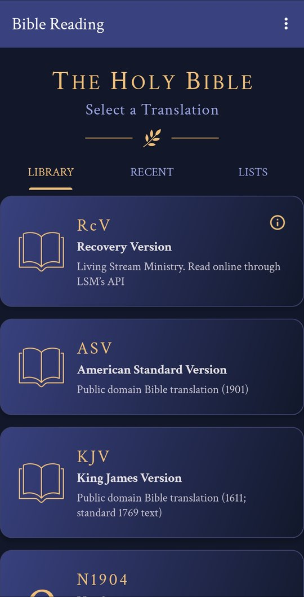
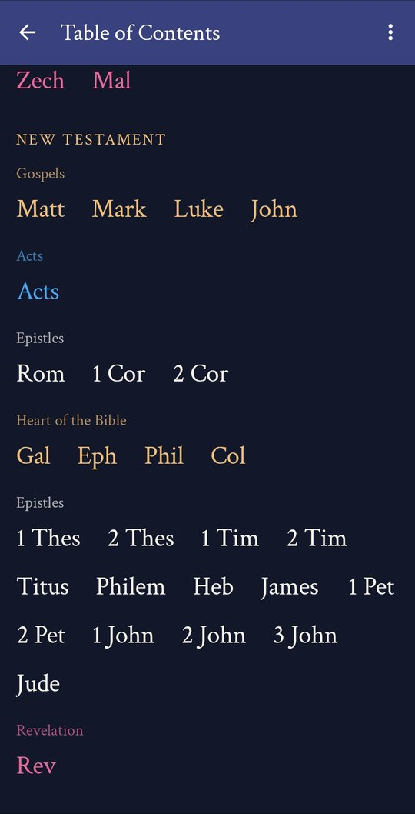
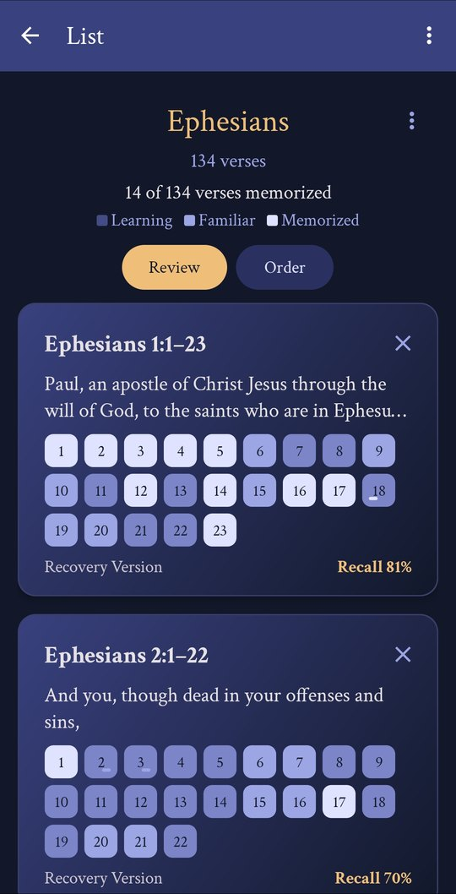

Read a verse, then recall it word by word: choose each word's first letter, and the passage moves on as you remember it.
Get it onGoogle PlayFree for Android. No advertising, no purchases, no data collected.
The Recovery Version, read online from Living Stream Ministry, in English, Spanish, Portuguese and Chinese. Also the King James Version, the American Standard Version and the Greek New Testament.
Swipe through the first letters of each word, or tap them. A rising tone follows each run, and a chime marks each clause, chapter and book.
Every clause is scored as you recall it, and scores fade as memory does. Reviews bring back what is slipping.
Keep key verses in lists for daily review, and follow reading plans through a book, a testament or the whole Bible, with a daily reminder.


